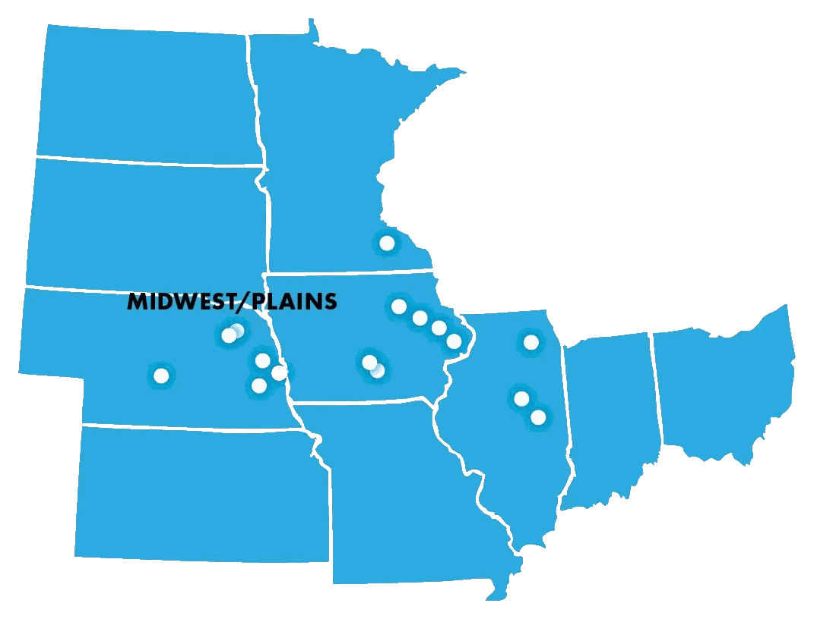

Bloomington, IL
1907 Jumer Drive, Suite DBloomington, IL 61704 800.607.6888
Regions
The Corn Belt is 111.2 million acres of the most efficient, most closely watched farmland in the world: Iowa, Illinois, Indiana, Ohio and Missouri. It is the region with the most sophisticated farm operations in the country, and it has long been the first place capital looks when it wants exposure to agriculture.
Its record is steady income that generally exceeds Treasury returns, appreciation near 6% a year over the long run, and the strongest inflation hedge of any major production region. What is different this year is the spread around that record: policy, trade and government payments now move local markets more than input costs and output prices do.
Peoples Company has worked this region since the company started, and it is where the largest share of our offices, our brokers, our land managers and our appraisers sit.

Corn Belt market
The Corn Belt contains approximately 111.2 million acres of farmland across the relatively homogeneous, row-crop–dominated production region of Iowa, Illinois, Indiana, Ohio and Missouri. Iowa and Illinois consistently rank first and second in the value of agricultural output within the region, and all five states rank among the top 13 nationally in agricultural production value, as well as within the top 10 for both corn and soybean production. Iowa leads the nation in corn production, while Illinois leads in soybeans.
Iowa is unique within this group due to its substantial reliance on livestock production, generating nearly $19.5 billion in annual livestock revenue — ranking third nationally behind Texas ($24 billion) and Nebraska ($20 billion). Indiana, Missouri and Ohio each generate approximately $6–7 billion annually from livestock, while Illinois generates roughly $4 billion. Livestock income is of particular importance, as livestock and crop sectors tend to move inversely: lower commodity prices reduce feed costs for livestock operations, and vice versa.
Total returns have exceeded those of publicly traded equity indexes with substantially lower volatility for nearly every possible 10-year holding period since 1990. However, the “thin market” and heterogeneous nature of farmland investments complicate access to the asset class relative to equities. Corn Belt farmland has also served as a strong inflation hedge, with returns exceeding inflation in all but one year since 1990.
Contrasting with these long-term characteristics, recent developments have introduced elevated uncertainty. While the three I’s identified in last year’s summary — income, interest rates and inflation — remain critical drivers of farmland valuation, their impacts have proven far more pronounced than anticipated due to short-term structural and policy-related changes. Inflation has been more persistent than expected, compounded by the effects of broad-based tariffs, uncertainty surrounding interest rate policy, and tensions between the administration and the Federal Reserve regarding monetary independence.
A fourth I, international trade, has had an outsized impact on the Corn Belt due to its heavy reliance on export markets. Historically, nearly 50% of U.S. soybean production was exported, with China alone accounting for approximately 45% of exports and Mexico an additional 9%. Following tariff announcements in April, China largely halted U.S. soybean purchases, shifting to Southern Hemisphere suppliers, and returned only marginally in late 2025. These shifts have resulted in lower U.S. soybean prices and a permanent reallocation of global demand. Even if trade relationships normalize, lost income during the disruption period is unlikely to be recovered.
It is worth restating some history to put the current cases into context. During the first Trump administration, Market Facilitation Program payments totaled more than $23 billion in 2018–2019, largely compensating soybean producers for trade-related losses. This was followed by approximately $31 billion in Coronavirus Food Assistance Program payments during 2020–2021. In many cases, total transfers exceeded market losses, resulting in net positive income effects. Farmland values rose accordingly. By late 2023, land values peaked in many areas, but strong balance sheets and thin markets prevented sharp declines; 2024 and early 2025 were instead characterized by increased dispersion in transaction prices around modest declines.
In 2025, major changes to crop insurance further increased government support. Premium subsidies rose substantially, often covering up to 80% of premiums and allowing coverage of up to 95% of expected area revenue, with net premium transfers to producers estimated at approximately $10 billion. USDA forecasts indicated total direct farm payments of $42.3 billion, with 73% classified as ad hoc, and subsequent authorization of an additional $12 billion in Farmer Bridge Assistance suggests this figure will rise further. ARC/PLC payments for the 2025 crop year, paid in 2026, are expected to average $30–65 per acre across much of the Corn Belt.
The short-term question in this region is therefore somewhat removed from the basic economics of input costs and output prices, and depends to an uncomfortable degree on the federal response to policy-influenced market impediments. Academic studies tend to find that 15–30% of a government payment is viewed as the equivalent of permanent, while changes in export market volumes transmit more directly to longer-term income expectations. Given the thin market conditions that still occur, with roughly 1.5% to 1.75% average annual turnover, the strength of local buyer balance sheets may be the primary short-term factor supporting asset values — and that strength is increasingly dependent on government program payments.
Transactional volumes remain low, driven by a sense of caution and uncertainty. Neighboring farmers have always been the primary purchasers of farmland in the Corn Belt, but others, including high net worth and family office buyers, have begun a more intentional investigation. Higher interest rates compared to 2020–2023 have kept some leveraged buyers and institutional buyers on the sideline as well, though farmers are beginning to view these levels as a new normal and remain fairly lowly leveraged, so the impact of elevated borrowing costs registers primarily in the cost of operating loans.
Finally, farmland markets in this region continue to move even further toward cash rent and flexible cash rental arrangements, with an increase in the use of custom farming arrangements as well. Around 60% of total acreage is leased in the Corn Belt, and for the first time this year a lease proposal was investigated with terms that included sharing any additional ad hoc payments occurring during the lease term. In simplest terms, lease management has an increasingly important role in determining the economic splits when more of the cash flows are associated with government payments.
The Corn Belt has long been a target for financial investment in agriculture, and is the region with the most efficient and sophisticated farm operations. The historic financial performance has been remarkable relative to competing investments, but the current uncertainties stemming from recent policy changes have created greater variability in local market conditions than has come from market or weather conditions in the past.
In total, the factors surrounding agricultural production and investment valuation models that created the steady and competitive returns, inflation hedging features and diversification benefits in the Corn Belt appear to remain, and returns are still relatively attractive, but in a widely expanded possibility set. The longer-term prospects remain positive, though shorter-term minor additional pullbacks would not be surprising. The best summary may still be that there will be both opportunities and disappointments as the markets churn back to a longer-run position of greater market certainty.
What moves this market
Sector income is not highly correlated with commodity prices alone. Government payments have eclipsed every other factor, and they are increasingly what local balance sheets rest on.
Higher for longer than anticipated. Rates bear on investor-buyers more than on farmer-buyers, who remain lowly leveraged and feel it mostly in the cost of operating loans.
More persistent than expected. Corn Belt returns show the highest correlation with inflation of any major region over long holding periods — nearly 75% at ten years.
The new fourth I, and the one with outsized impact here. China largely halted U.S. soybean purchases after April, and the reallocation of global demand looks permanent.
Long-run performance
| Period | 1991–2025 35 years | 2001–2025 25 years | 2011–2025 15 years | 2016–2025 10 years | 2021–2025 5 years | 2022–2025 4 years | 2023–2025 3 years | 2024–2025 2 years | 2025 1 year |
|---|---|---|---|---|---|---|---|---|---|
| Income %/year | 3.95% | 3.36% | 3.07% | 2.90% | 2.80% | 2.75% | 2.70% | 2.66% | 2.55% |
| Capital gain %/year | 5.97% | 6.02% | 6.02% | 2.71% | 6.09% | 7.42% | 7.49% | 5.54% | 4.59% |
| Total return %/year | 9.91% | 9.38% | 9.09% | 5.61% | 8.89% | 10.16% | 10.19% | 8.20% | 7.14% |
| After tax and expenses | 9.40% | 8.94% | 8.57% | 5.37% | 8.60% | 9.84% | 9.84% | 7.87% | 6.86% |
| CPI | 2.54% | 2.54% | 2.50% | 2.95% | 3.90% | 4.42% | 3.79% | 2.99% | 2.86% |
| CMT-10 | 4.13% | 3.32% | 2.91% | 2.65% | 2.96% | 3.37% | 3.85% | 4.15% | 4.29% |
Returns from this region display the highest correlation with inflation over longer holding periods of any major production region, at nearly 75% over ten years, and the lowest drawdown risk. Iowa farmland prices react a little more than Illinois or Indiana in both rising and falling environments, but all three of the I states share very similar patterns, which correspond closely with rental rates as well. Ohio and Missouri have lower productivity on average and more diversified agriculture, with dairy, livestock and recreational ground representing a larger share of the land base.
Source: Peoples Company, 2025 National Land Values, Corn Belt section. Figures are five-state averages and are updated once a year when the report is published.
On the ground
For sale and at auction
 New
New
 Auction
Auction
Auction
Auction
Auction
Auction
Who you will work with


Sixteen offices, brokers, land managers and appraisers across the Corn Belt and the Plains. Tell us what you own or what you are looking for, and we will put you with the person closest to it.